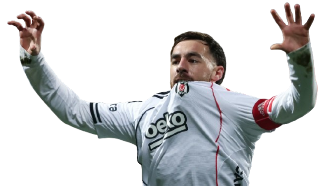
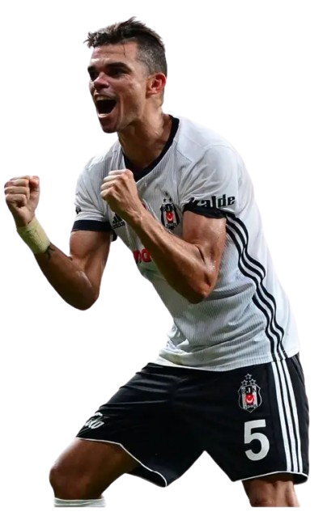
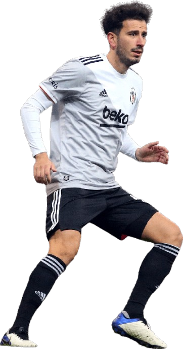

Úvod a vznik nejstaršího tureckého klubu (1903)
Beşiktaş Jimnastik (zkráceně BJK) je nejstarší sportovní klub v Turecku a jeden z nejvýznamnějších fotbalových celků v zemi. Jeho kořeny sahají do března roku 1903, kdy skupina dvaceti dvou mladých nadšenců v istanbulské čtvrti Beşiktaş začala tajně trénovat gymnastiku, zápas a vzpírání v zahradě domu Osmana Paši. V tehdejší Osmanské říši bylo zakládání sportovních spolků přísně sledováno, přesto klub získal zvláštní povolení a pod názvem Bereket Jimnastik Kulübü položil základy moderního tureckého sportu. Fotbalový oddíl vznikl v roce 1911 a velmi rychle se zařadil mezi absolutní špičku v Istanbulu i v celé zemi.


Klubové barvy, znak a přezdívka Černí orli
Oficiálními barvami klubu jsou černá a bílá. Podle klubové tradice byly původními barvami červená a bílá, ale po bolestivých ztrátách během balkánských válek v letech 1912–1913 se klub rozhodl nahradit červenou barvu černou jako symbol smutku za padlé členy a sportovce, dokud nebudou ztracená území získána zpět. Černobílá kombinace už klubu zůstala navždy. Beşiktaş je zároveň jediným tureckým klubem, který má ve svém znaku přímo tureckou státní vlajku – toto výjimečné právo získal za reprezentaci země v zápase proti řeckému národnímu týmu v roce 1952. Hráčům i fanouškům se po celém světě přezdívá Kara Kartallar (Černí orli), což pochází z památného zápasu v roce 1941, kdy fanoušci skandovali „Útočte jako černí orli!“.
Neporažení šampioni a zlatá éra klubu
Za více než sto dvacet let své existence nasbíral Beşiktaş desítky domácích trofejí a spolu s Galatasarayem a Fenerbahçe tvoří tzv. velkou istanbulskou trojku, která nikdy nesestoupila z nejvyšší turecké soutěže. Jedním z nejcennějších zápisů do historie tureckého fotbalu je sezóna 1991/1992, ve které Beşiktaş pod vedením legendárního trenéra Gordona Milnea dokázal vyhrát celou Süper Lig bez jediné porážky (23 výher, 7 remíz, 0 proher) – tento rekord se dodnes žádnému jinému tureckému klubu nepodařilo zopakovat. Klub se také pravidelně účastní evropských pohárů; mezi největší úspěchy na mezinárodní scéně patří postup do čtvrtfinále Poháru mistrů evropských zemí (1986/87), čtvrtfinále Evropské ligy (2002/03 a 2016/17) a historické vítězství v základní skupině Ligy mistrů bez jediné porážky v sezóně 2017/18.

5 největších milníků v historii Beşiktaş JK
- 1903 – Založení klubu ve čtvrti Beşiktaş (nejstarší sportovní klub v Turecku).
- 1991/92 – Zisk mistrovského titulu v lize bez jediné porážky (unikátní rekord v turecké lize).
- 2002/03 – Postup do čtvrtfinále Poháru UEFA v sezóně oslav 100. výročí klubu.
- 2016 – Otevření moderního stadionu na břehu Bosporu (dnešní Tüpraş Stadyumu).
- 2017/18 – Historicky první turecký tým, který vyhrál základní skupinu Ligy mistrů bez jediné prohry.

Tüpraş Stadyumu a legendární fanoušci Çarşı
Domovským stánkem Černých orlů je moderní stadion Tüpraş Stadyumu (dříve Vodafone Park), který leží na jedinečném místě přímo na evropském břehu průlivu Bospor v bezprostřední blízkosti paláce Dolmabahçe. Stadion s kapacitou přes 42 500 diváků byl otevřen v roce 2016 na místě původního legendárního stadionu İnönü a je považován za jeden z nejhlučnějších a nejkrásnějších fotbalových stánků v Evropě. O neopakovatelnou kulisu se stará především proslulá fanouškovská skupina Çarşı, známá svou bezmeznou oddaností, originálními choreografiemi a chorály, které jsou slyšet přes celý Bospor až na asijskou stranu Istanbulu. Pro fanoušky Beşiktaşe platí slavné heslo: „Siyah Beyaz, Ölüm Yaşam“ (Černá a bílá, smrt i život).
Tüpraş Stadyumu
| Soutěž | Počet titulů | Vítězné roky |
|---|---|---|
| Süper Lig | 16× | 1957, 1958, 1960, 1966, 1967, 1982, 1986, 1990, 1991, 1992, 1995, 2003, 2009, 2016, 2017, 2021 |
| Türkiye Kupası | 11× | 1975, 1989, 1990, 1994, 1998, 2006, 2007, 2009, 2011, 2021, 2024 |
| TFF Süper Kupa | 10× | 1967, 1974, 1986, 1989, 1992, 1994, 1998, 2006, 2021, 2024 |